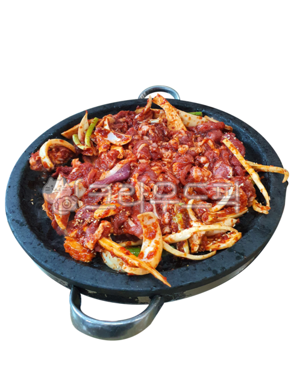

오리불고기
재료:오리고기(국내산), 양파(국내산), 대파(국내산), 당근(국내산),
양배추(국내산), 깻잎(국내산), 고춧가루(국내산), 생강즙(국내산),
청양고추(국내산)
오리불고기의 특징
오리고기는 불포화지방산이 풍부하여 혈관 건강에 도움을 줍니다. 단백질
함량이 높고 콜라겐이 많아 피부 탄력 개선에도 유익합니다. 오리고기는
고소한 맛과 부드러운 질감으로 다양한 연령대에서 즐길 수 있는
고기입니다. 고추장, 간장, 다진 마늘로 만든 양념이 오리고기 특유의 맛을
살리면서도 잡내를 제거합니다. 매콤달콤한 맛으로 밥반찬이나 술안주로도
제격입니다. 양파, 대파, 당근 등 다양한 채소와 함께 볶으면 색감이
풍부하고 영양이 균형 잡힌 요리가 됩니다. 깻잎을 추가하면 고소하면서도
상쾌한 향을 더할 수 있습니다.